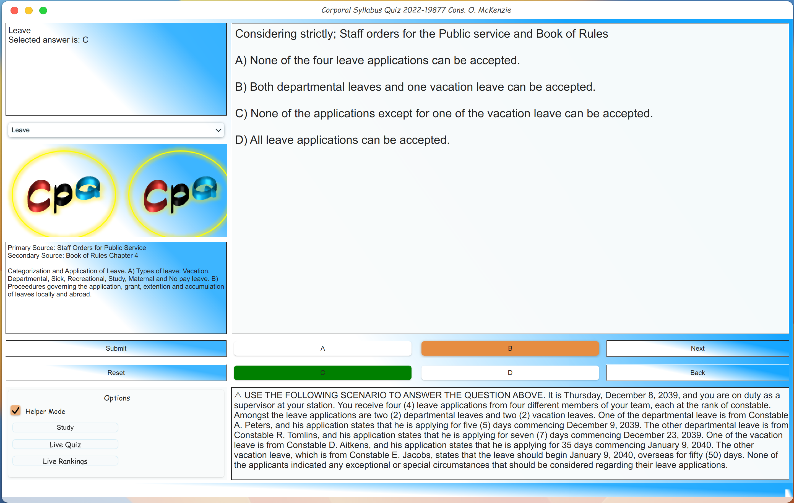
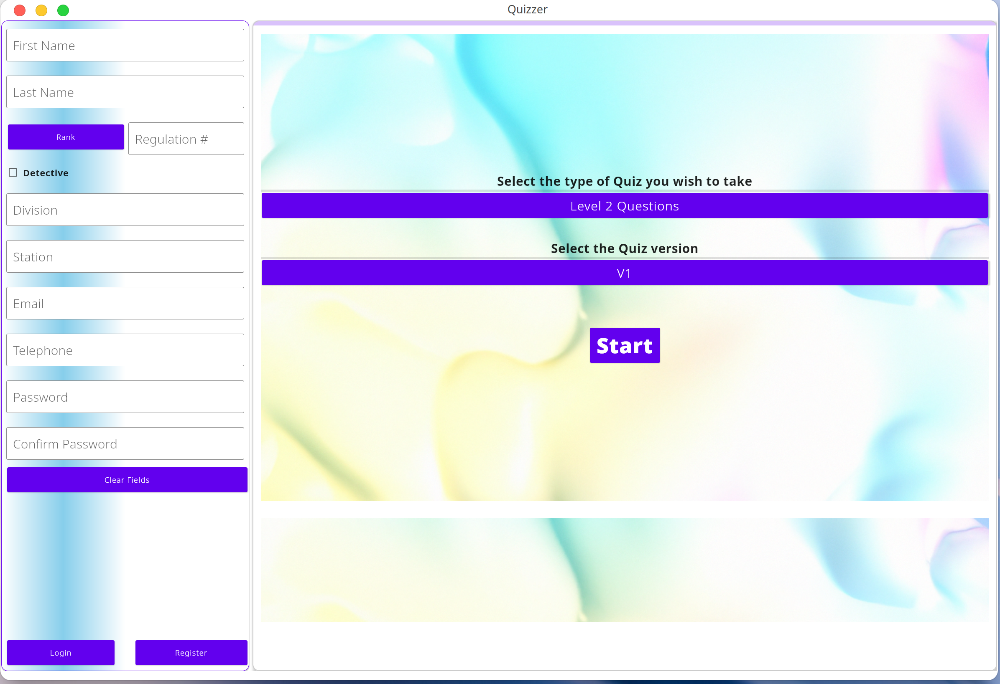
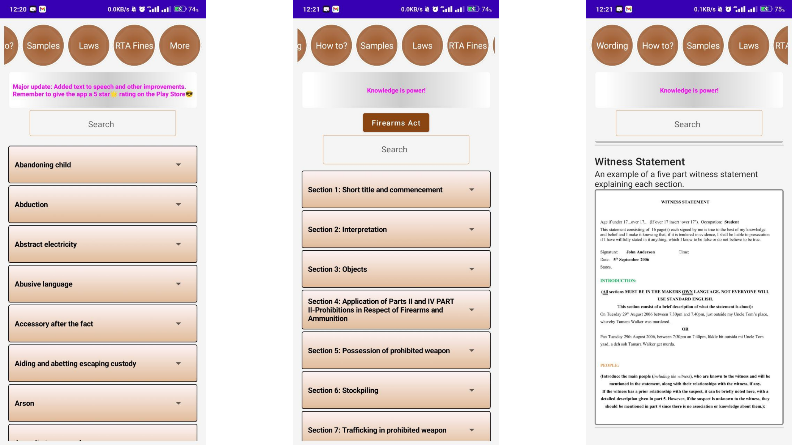
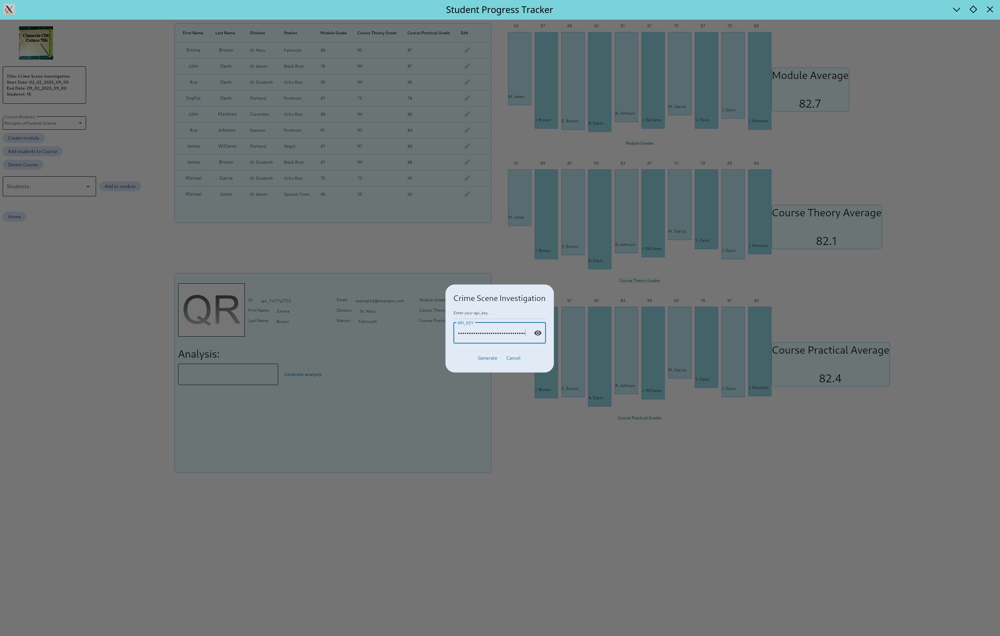
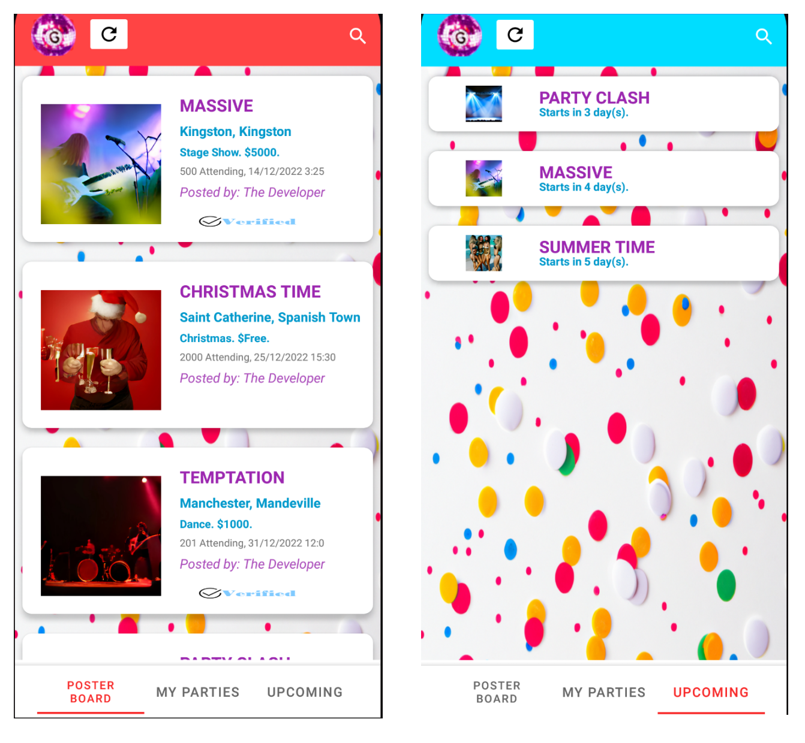

JCFSyllabusQuiz-Python
A python version of a quiz to help JCF members to study for promotional exams.

Quizzer
Application that for administering quiz based assessments.

Law Resources
This app is a comprehensive legal information resource designed to assist users in understanding and navigating various aspects of the law.

Student Progress Tracker
This is a progress tracker for police/law enforcement students in training, built using the Python Flet module.

GoParty-JA
GoParty is a one-stop shop for finding and advertising parties in Jamaica and the Caribbean.